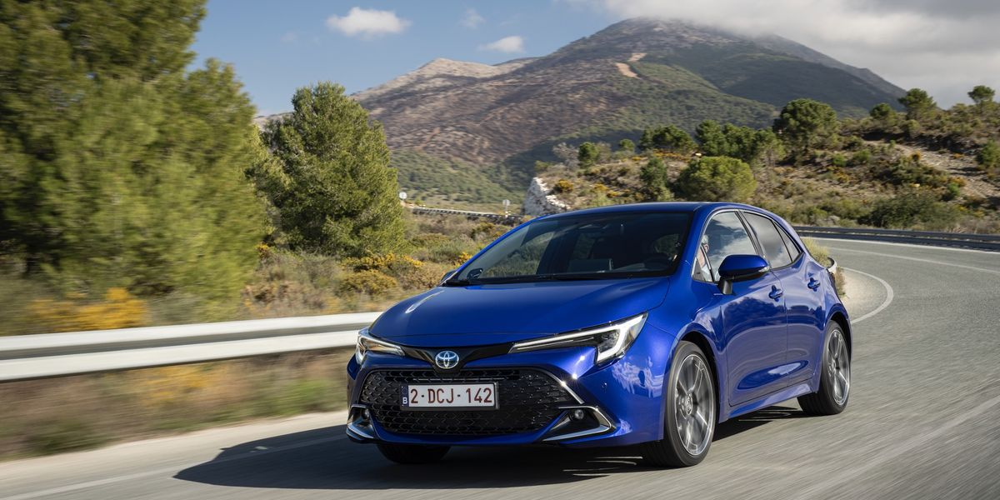

1. Toyota Corolla: El Toyota Corolla es mundialmente conocido por su fiabilidad y durabilidad. Es uno de los modelos más vendidos debido a su longevidad y bajo costo de mantenimiento.
2. Ford F-Series: La serie F de Ford, especialmente la F-150, es muy popular por su robustez y capacidad. Es el vehículo más vendido en Estados Unidos.
3. Toyota RAV4: El Toyota RAV4 es un SUV compacto que destaca por su fiabilidad y eficiencia en combustible. Es uno de los SUVs más vendidos a nivel mundial.
4. Honda CR-V: El Honda CR-V es un SUV muy popular debido a su espacio, fiabilidad y eficiencia. Es uno de los modelos más vendidos de Honda.
5. Honda Civic: El Honda Civic es conocido por su fiabilidad y eficiencia en combustible. Es uno de los coches más vendidos de Honda en todo el mundo.

6. Chevrolet Silverado: La Chevrolet Silverado es una camioneta muy popular en América del Norte, apreciada por su robustez y capacidad de carga.
7. Volkswagen Tiguan: El Volkswagen Tiguan es un SUV compacto que destaca por su diseño, tecnología y fiabilidad. Es uno de los modelos más vendidos de Volkswagen.
8. Ram Trucks: Los camiones Ram son conocidos por su potencia y capacidad. Son muy populares en América del Norte.
9. Toyota Camry: El Toyota Camry es un sedán mediano conocido por su fiabilidad y eficiencia. Es uno de los modelos más vendidos de Toyota.
10. Nissan Rogue: El Nissan Rogue, conocido como X-Trail en algunos mercados, es un SUV compacto muy popular por su versatilidad y tecnología.